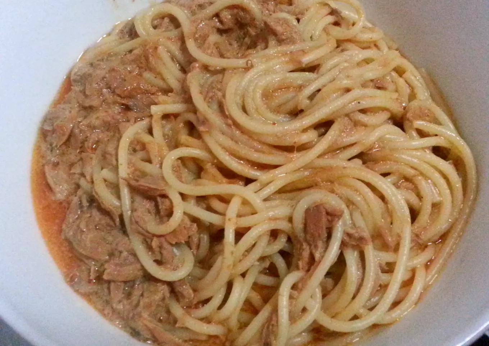

Tuna Mayo Sweet Chili Noodles
This dish is perfect for when you don't know what you're in the mood for, but you know that you're starving! Not sure if you are in the mood for sweet or savoury? Spicy or creamy? Fat or protein? Don't worry, I got you. This dish has it all, so much so that you forget the ingridients don't go together! It might not be a looker but you can satisfy all your nutritional needs in under 10 minutes.

Ingredients
- pack of instant noodles
- 3-4 tablespoons of sweet chili sauce
- 2 tablespoons of mayo
- a can of tuna, preferably flakes
- sessame seeds (optional)
- parsley (optional)
Cooking Instructions
- put the instant noodles in boiling water for five minutes. After they are done, drain them and put them in a bowl
- open the can of tuna and decant the excess oil
- slap the tuna on the noodles
- add the mayo and sweet chili
- stir everything until you get the sauce and tuna evenly in the noodles
- add sessame seeds and parsley if you feel fancy
Bon Apettite!